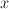
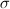

 = data set
 = number of data values in
= number of data values in  = mean of the data set
= mean of the data set
 = standard deviation of the data set
Kurtosis is a measure of the peakedness of a distribution. A high kurtosis indicates a sharper peak and flatter tails, whereas a low kurtosis indicates a rounder peak and wider shoulders.
The formula for kurtosis that is unbiased and centered at 0 is
= number of data values in = mean of the data set
The formula for kurtosis that is biased and centered at 3 is